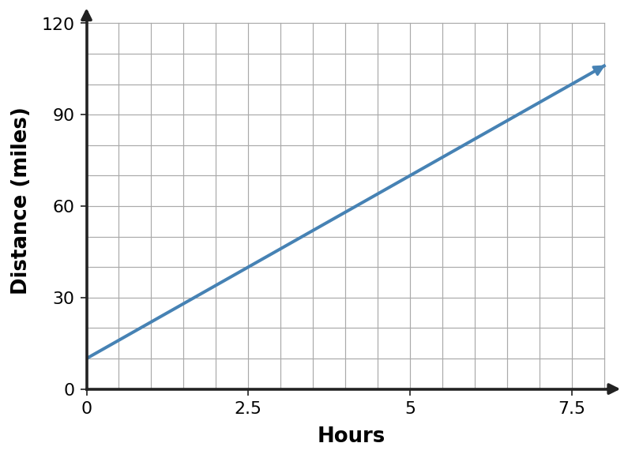

Find the slope of the line through $(-1,-1)$ and $(2,2)$.
Algebra 1 · Unit 2
Exit Ticket A
Graph $y=-3x-7$. Mark the $y$-intercept and at least one additional point that shows the slope.
Use the graph to identify the $y$-intercept and describe whether the function is increasing or decreasing.

Read the trip graph to estimate the distance at 4 hours. The requested time is inside the displayed 0-to-8-hour window.

On a graph, each horizontal grid step represents 3 units and each vertical grid step represents 5 units. A student moves right 3 grid step(s) and up 3 grid step(s) and calls the slope $1$. Identify the scale error and give the numerical slope.